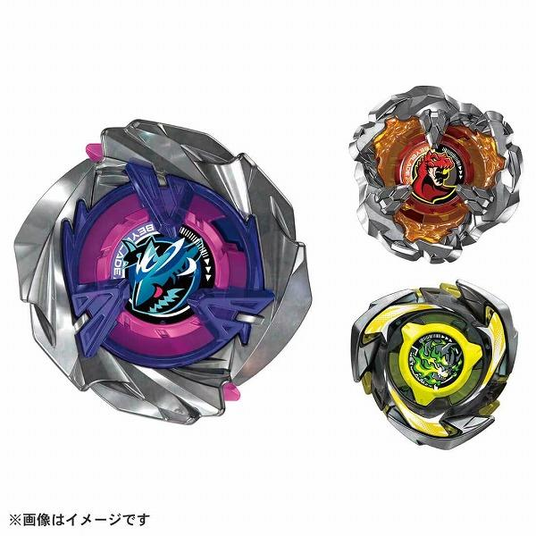

現時陀螺比賽的賽場必備、環境陀螺（T0/T1）
T0/T1 刃擊環⬧鋼鐵戰刃
UX：巫師幻杖⬧魔導神杖▣烈鯊鱗甲⬧鮫鯊狂鱗▣隕石青龍⬧隕星龍騎士▣翔空天馬⬧空力天馬▣時鐘幽景⬧時鐘幻象
CX：戰神轟裂⬧戰神爆擊W/H
BX：鳳凰飛翼
T0/T1 核輪⬧固鎖輪盤
1-50 1-60 7-60 7-70 9-60
T0/T1 軸心
FB軸 H軸 E軸 B軸 R軸 LR軸

UX：巫師幻杖⬧魔導神杖▣烈鯊鱗甲⬧鮫鯊狂鱗▣隕石青龍⬧隕星龍騎士▣翔空天馬⬧空力天馬▣時鐘幽景⬧時鐘幻象
CX：戰神轟裂⬧戰神爆擊W/H
BX：鳳凰飛翼
1-50 1-60 7-60 7-70 9-60
FB軸 H軸 E軸 B軸 R軸 LR軸
大部分陀螺商品的包裝內都有一個QR code，有時印在小卡上、有時隱藏在包裝盒內部某處。下載官方App並利用它掃瞄就獲得分數，相當於官方日元定價。
QR code旁有個小A字（Asia）才能掃進台灣/香港等地的App，沒有的話僅能掃進日版App，獎品也只寄送至日本國內。
App內抽獎每次消耗1000分，有機會抽中限定陀螺購買券或兌換券。每隔半年左右更換獎品。
它能記錄你的發射次數及測量力度，並能換成分數，但每天透過發射而獲得的分數設有上限。此外，掃瞄通行證的Beycode後，往後的商品Beycode分數也有少量加乘。
"暴風戰龍⬧龍騎士 S", "岩巖獅王⬧巨岩雄獅", "異界聖劍⬧神力聖劍", "暴風戰龍⬧龍騎士 S", "烈風天馬⬧暴風天馬", "勝利武神⬧天翼戰神", "青銅玄武⬧堅甲戰龜 S", "雷霆魔龍高空扣殺⬧雷霆天龍強擊", "雷霆魔龍連環攻擊⬧雷霆天龍連打", "朱雀戰神⬧烈焰飛鳳 S", "青翼白虎⬧銀牙烈虎 S", "朱雀戰神⬧烈焰飛鳳 S"